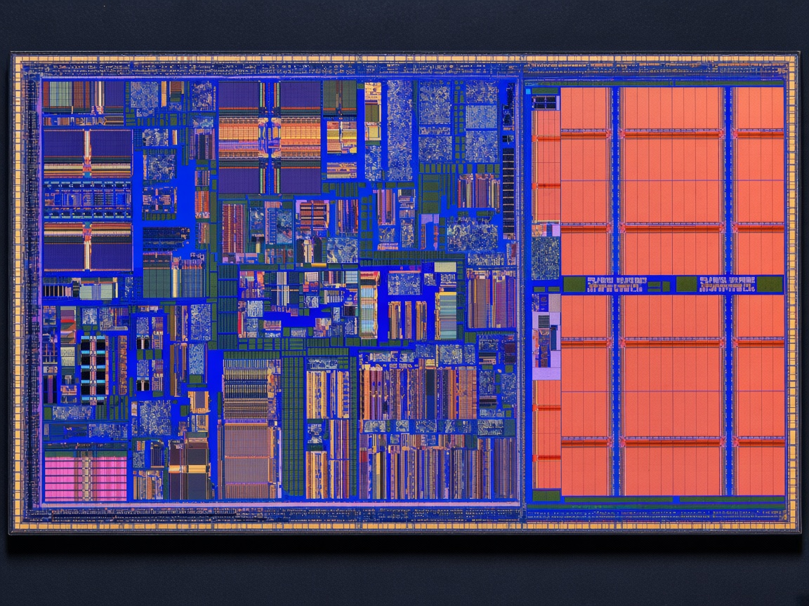

Semiconductor intelligence
The map from ISA to silicon.
A curated path through open RISC-V — cores, interconnect, verification, FPGA and open ASIC — so engineers find the right project for the problem they are solving.

Die shot · RISC-V SoC
8Engineering layers
RISC-VISA through tapeout
Open IPCores, buses, SoCs
Live feedsIndustry + GitHub
The product
Navigate by the engineering layer.
Industry signal
What the ecosystem is talking about.
Open projects